SPS-55 Surface Search Radar
Radio Detection And Ranging
After graduating from my vocational schools as an Electronics technician, I spent my first few years in the Navy working on a surface search radar called the AN/SPS-55, which the Navy beagn to use in 1971. Technically being a part of the STEM community, yet finding myself working on ancient tech has been a recurring theme throughout my career. The Navy ET rating badge pictured on the left is a depiction of a helium atom.
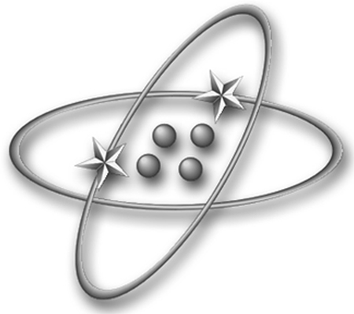 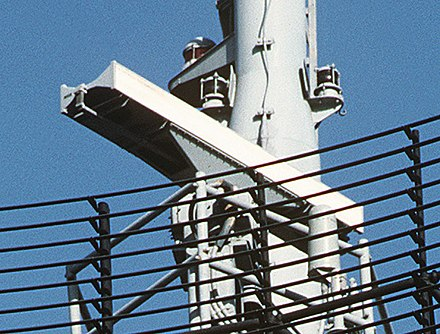2M/Micro-Miniature Electronics Repair
AKA "soldering"
After my first ship was decommisioned, I was quite happy to be sent to school to learn micro electronics repair, which mainly consisted of soldering.

Thermopile Sensors
During my first few years with Coherent Inc, I worked as a production technician, which consisted of testing thermopile sensors that were used to detect the power, frequency and other output data of a laser. A thermopile is an electronic device that converts heat into electrical voltage
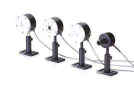 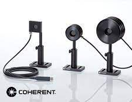Lasers!
Light Amplification by Stimulated Emission of Radiation
From sensors, I eventually moved on to building and testing laser diodes. Laser diodes are similar to LEDs, but their output is more intense with additional optics added to create a laser beam. The OBIS (left) and the Stingray (right) are both used in the medical feild for a process known as cell flow cytometry.
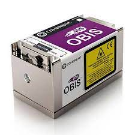 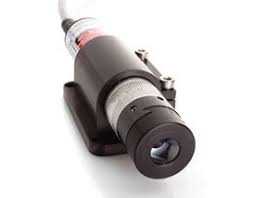Land Survey Equipment
Pictured on the left are devices that are used by PWD survyors to map the floors of bodies of water. On the right is a GPS antenna and data collector used to precisely locate certain faetures that are of interest to the water department, such a valve and the contours of sidewalks. After I left Coherent Inc to return to Philadelphia, I was lucky enough to be hired by the Philadelphia Water Department. While I enjoyed my time with the Land Survey Unit, it quickly became apparent to me that working out in the elements was not ideal.
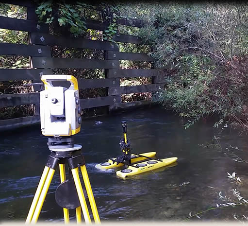 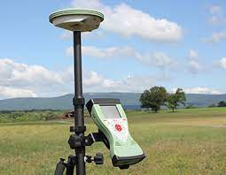RTU & Modems
After returning to my original vocation within the Water Department, I signed on to work for the Load Control unit, which manages the city's fresh water. Load control accomplishes this through a system known as SCADA, which uses remote terminal units, or RTUs to contiuosuly monitor and collect data from various locations around the city. This is how we can detect water main breaks, security breaches, or other anomalies that may interfere with the conveyance of freah water. Pictured on the right is an example of the types of modems used to connect the RTUs.
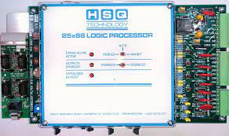 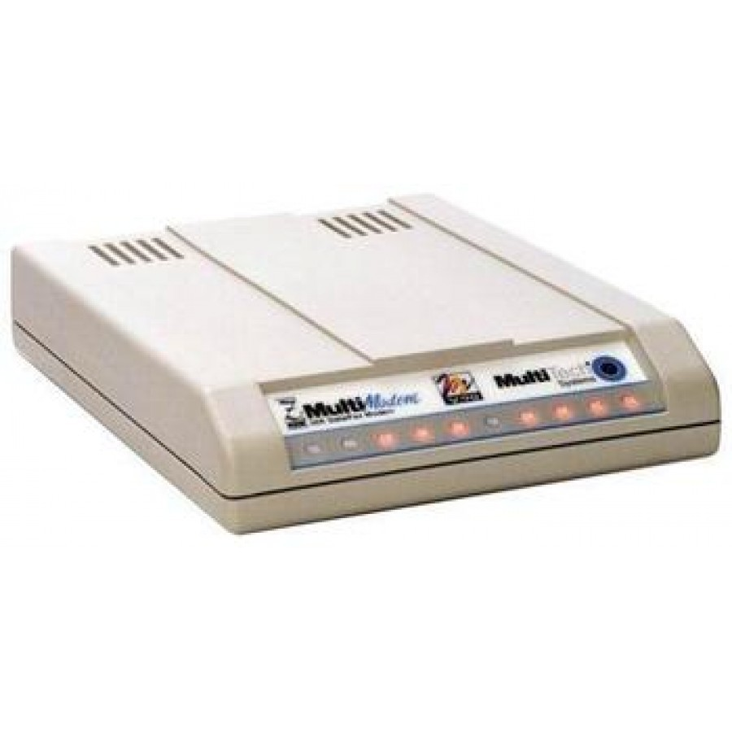Looking Ahead to the Future
Aside from my time with Coherent Inc, I haven't had the opportunity to work with technology that is truly considered up to date! While many of my previous roles have included limited aspects of programming (configuring X86 RTUs, programming certain lasers, etc), this is the first time I've been able to really delve into the topic. I hope that in the future, I'll be able to contribute to a software engineering team that not only reflects the diversity of Philadelphia, but who are also actively involved in improving digital accessibility for all of its residents.
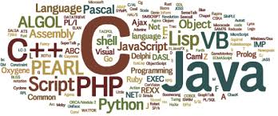